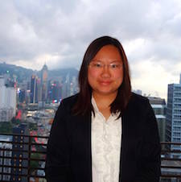
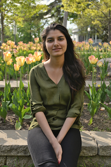

Team Queen's Canada
This year, the QGEM team is composed of undergraduate students from a wide range of backgrounds including Life Sciences, Biology, Biochemistry, Computing, and Engineering. Each year our team dedicates four months during the summer towards working on our project, after which we attend the iGEM Competition, where we present our project and learn about the projects of other universities around the world.
2016 QGEM Members
-
Yifei Wang (Director)
Yifei is in his fourth year of Life Sciences. Yifei is the new QGEM Dictator after overthrowing Dragos in a peaceful coup and enjoys bossing the QGEM team around from his SynBio throne. His favourite class at Queen’s was molecular biology, and he hopes to pursue a career that combines SynBio and medicine. Yifei has a burning passion for Metro prepared meals, but hopes to have enough money one day after becoming the CEO of his own biotech startup that he can hire Chef Dee #anotherone. His favourite sports team is the Toronto Raptors, and he hopes that his amateur career as a Roots model will one day allow him to replace Drake as their new courtside celebrity. -
Jia Tanwani
Jia will be starting her first year of medicine in the fall at the University of Toronto. This is Jia’s second summer being involved with QGEM. She eagerly joined QGEM in 2015 to be part of a team that works to solve real-world problems and is currently leading the Policy & Practices component of the 2016 project. When she’s not teaching synthetic biology courses or sending emails, Jia loves to go shopping and enjoys tagging her friends in Facebook memes. In the future, Jia plans to continue pursuing innovative research that fuses her interests in medicine and synthetic biology. -
Danai Topouza
Danai is in her fourth year studying Biology and Computer Science. She saw QGEM as an opportunity to be an active part of an exciting research project, learn more about synthetic biology, and put her programming skills to work. Danai is planning to pursue graduate studies that combine her interests in genetics and computational biology. When not debugging, Danai enjoys spending time outdoors, trying out new restaurants, and watching horrible movies. -
Yifei Wang
 Yifei is currently in his third year of Life Sciences and learned about QGEM during his second year, quickly becoming drawn to the innovation, competitive spirit, and paisley shirt cult that is QGEM. He has learned to appreciate not only its lab and research opportunities, but also new skills he never dreamed of mastering, like web development and teaching. Apart from building the dankest QGEM website of all time, Yifei aspires to travel the world and one day sit courtside with Drake.
Yifei is currently in his third year of Life Sciences and learned about QGEM during his second year, quickly becoming drawn to the innovation, competitive spirit, and paisley shirt cult that is QGEM. He has learned to appreciate not only its lab and research opportunities, but also new skills he never dreamed of mastering, like web development and teaching. Apart from building the dankest QGEM website of all time, Yifei aspires to travel the world and one day sit courtside with Drake.
-
Kennedy Ayoo
Kennedy is in his fourth year of Biochemistry. Upon the completion of his undergraduate degree, he hopes to pursue a career in the NBA, using synthetic biology to help the Toronto Raptors win their first championship (this may be the only way the Raptors can win). In the meanwhile, most of Kennedy’s days are spent shoulders deep inside a fume hood. -
Matthew Bentley
Matthew is in his third year of Life Sciences. He was first introduced to QGEM through Queen’s most popular and well organized club, the synthetic biology club. He saw QGEM as an exciting opportunity to learn more about the real world applications of synthetic biology, and a good fit for his competitive nature. He hopes to pursue a career in medicine and thought QGEM would be a good way to procrastinate studying for the MCAT. -
Linor Berezin
Linor is in her fourth year studying Biochemistry. She joined QGEM this year in order to explore her interests in synthetic biology and to collaborate within a team that works towards finding innovative solutions to problems. When not in the lab attempting to isolate natural products from bacteria, Linor can be found sailing around Lake Ontario. -
Hillary Chan
 Hillary is in her fourth year of studying Biology and Health studies. Her academic interests span from molecular biology to ethics and humanities. In the field of molecular biology, Hillary is particularly interested in learning how proteins involved in cell communication or signaling pathways can be engineered to produce antibacterial or antifungal drugs. As for ethics and humanities, she enjoys studying how policies or patent protection strategies are implemented for new medicinal drugs. Her diverse interests have led Hillary to volunteer with the 2016 QGEM team. Not only does Hillary find this year’s project to be novel and inspiring, she appreciates QGEM as a platform that combines both her academic interests while enabling her to gain experience in project design, data analysis and interpretation, scientific writing, and collaborating with other students who have similar interests. -
Danielle Ciren
Danielle is in her third year of Biology. She enjoys all things molecular biology, so QGEM was the perfect fit! Being her second year on the QGEM team, Danielle has gained more experience in research design as well as scientific writing and loves the idea of student-driven research. This summer Danielle is contributing to the Policy & Practices component of the project. In her spare time, Danielle enjoys solving puzzles, reading, and attempting to play the ukulele over the protests of her neighbors. In the future, Danielle hopes to pursue a Masters in Biology! -
Julia Grein
Julia is in her third year of biochemistry with a certificate in business. Her decision to stay with QGEM for a second year was inspired by her love for iGEM and Dragos’s pancakes. Her enthusiasm for laboratory work and biotechnology makes QGEM the perfect fit to combine these interests while being involved in the Queen’s and synthetic biology communities. When she’s not managing the Twitter account or editing, Julia frequently saves QGEM from technological incompatibility issues with her Mac-VGA adapter. -
Anna Ilina
Anna is currently in her third year of Biomedical Computing. She loves studying genetics and hopes to learn more about bioinformatics tools by participating in the QGEM team this summer. Anna found out about QGEM from one of her professors and is looking forward to participating in the dry lab team this summer. She once set a beaker on fire and decided that joining the dry lab will be the safest option for everyone. In the future, she hopes to pursue medical research, continue working with technology, and create a recipe for the world’s best chocolate cake. -
Sabrina Quazi
Sabrina is in her fourth year of Biomedical Computing. Sabrina always has a smile to offer and can more often than not be found chatting up strangers. She is so excited to create a meaningful dent in synthetic biology alongside the very same team that introduced it to her in the first place! Outside of QGEM, Sabrina can be found figure skating, playing NBA 2k16 (very, very poorly), and working with the Queen’s Innovation Connector. -
Simran Sharrma
 Simran is a fourth year Biochemistry student who is terrible at writing biographies about herself. After realizing she loves research and lab work, she found QGEM to be the perfect environment to collaborate with colleagues on a project that spans every step of the research process. She has found that she thoroughly enjoys all the different components of QGEM and hopes to make an impact with all the work each member has put in. She has also found that, unlike many other team members, she doesn’t care much for Drake and sincerely hopes that this isn’t reason enough to get kicked off the team. -
Vinith Suriyakumar
Vinith is in his third year of Biomedical Computing, which makes the QGEM Dry Lab team the perfect volunteer opportunity! He first learned about QGEM through introductory biochemistry (BCHM 218) and was inspired to seek a way to get involved! Vinith is really excited to be a part of the team this year because he loves coding and developing algorithms. He wants to use his knowledge of computing to help combat real world problems armed with the principles of synthetic biology. Vinith is an avid superhero fan with Captain America being one of his favorite movies. A cool fact about Vinith is that he has a first degree black belt. -
Rajiv Tanwani
 Rajiv is in his second year of Life Sciences. He was drawn to QGEM because he wanted to explore the avenues of research in a student-led environment. Rajiv is contributing to the dry lab as well as the Policy & Practices component of this year’s project. In his spare time, he enjoys hiking and test-driving sports cars. His future aspirations include becoming an orthopedic surgeon and owning a collection of luxury sports cars.
Rajiv is in his second year of Life Sciences. He was drawn to QGEM because he wanted to explore the avenues of research in a student-led environment. Rajiv is contributing to the dry lab as well as the Policy & Practices component of this year’s project. In his spare time, he enjoys hiking and test-driving sports cars. His future aspirations include becoming an orthopedic surgeon and owning a collection of luxury sports cars.